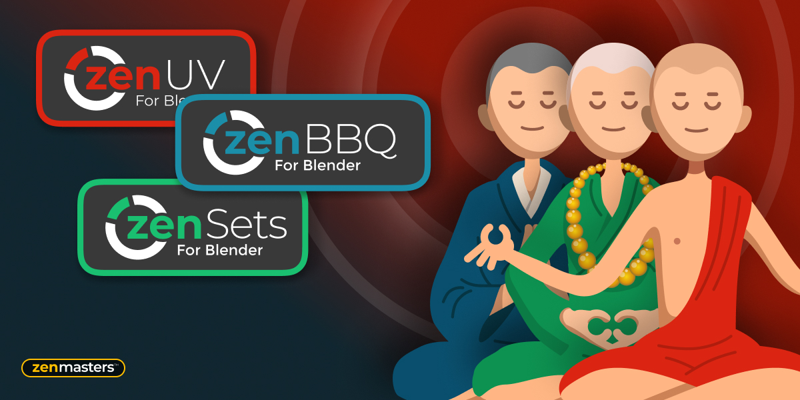
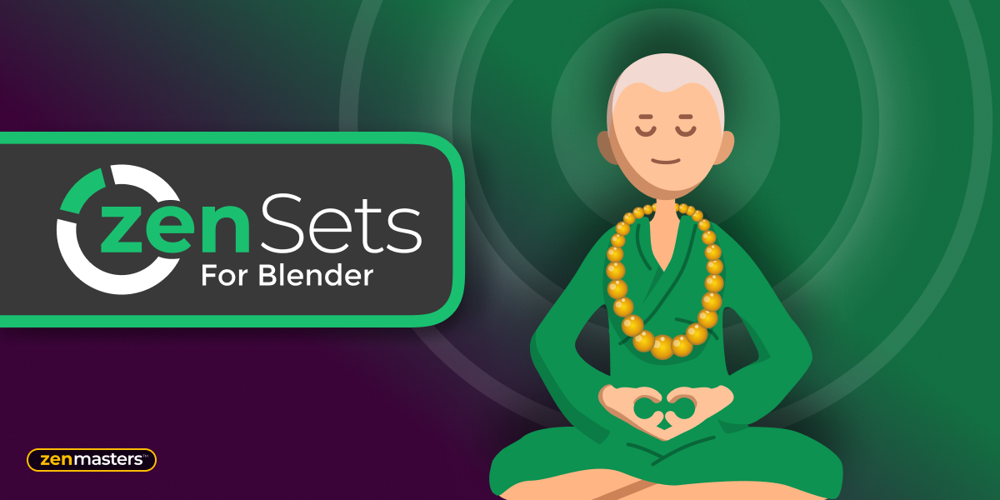
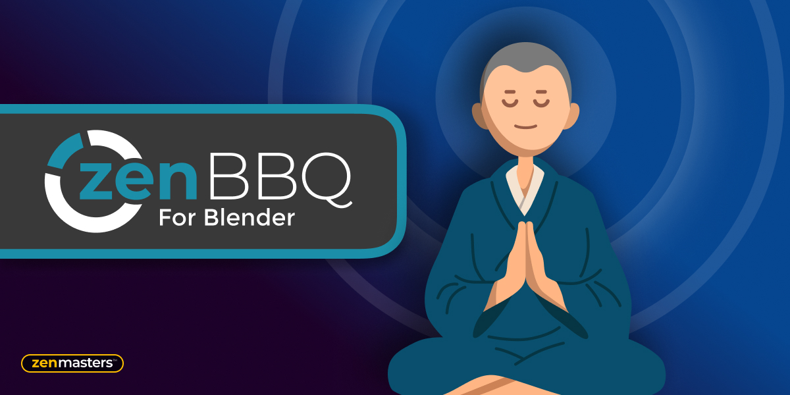
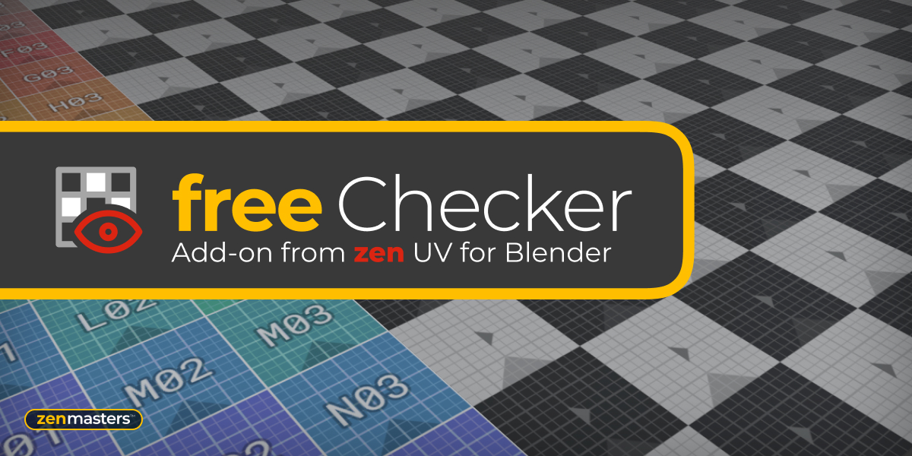
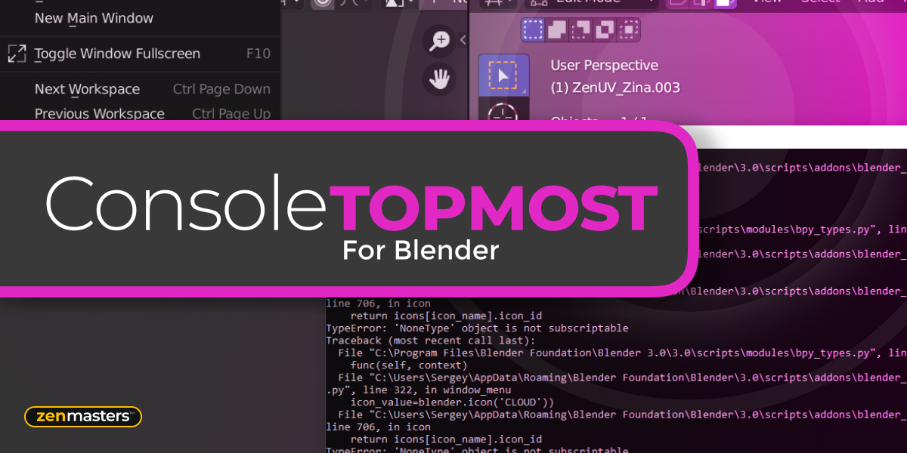

Our Add-ons
Zen Bundle
All Zen add-ons in one place. Together is cheaper!

Zen UV
Zen UV is not just a set of tools, it is ready to use pipeline for fast creating UV’s in Blender. It represents an intuitive system created by professionals and refined in real projects. Enjoy this experience with us!

Zen Sets
Zen Sets is an add-on for creating, managing, and visualizing Collections and Mesh Element Groups. Save the selection of Verts / Edges / Faces / Objects to bring it back whenever you want, modify it, and display it by color in Viewport and UV Editor in a couple of clicks. Meet true Selection Sets for Blender!

Zen BBQ
Zen BBQ is an add-on for creating, adjusting, and visualizing Bevels in a couple of clicks! Are you tired of preparing geometry for the Subd or Bevel modifiers? Look no further!

Checker
Check the state of UVs (FREE).

Console Top Most
Are you tired of switching back to the System Console window in Blender? There is a way out! Console Top Most add-on makes the System Console to the TOPMOST window!
